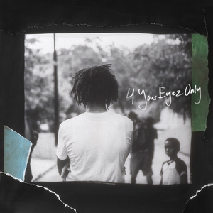
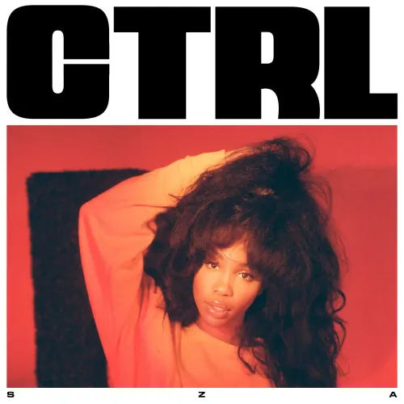

Music
Favorite albums of all time:
- 4YEO by Jcole:
- Ive pretty much listened to his whole discography but that 4YEO title track is probably my favorite piece of music by him. It represents the sad reality of some people and its really unfortunate that he had to make this album but i hope at least it reaches the people that it could actually help make better decisions and get out of what feels like an endless cycle and entrapment. The second verse on Immortal is really powerful. The skit at the end of changes breaks my heart. She's mine part 1&2 are absolutely adorable. That baseline in Folding clothes gets me going despite the constant hate on the track. Jcole managed to make this more than just a spreading awareness against dealing drugs documentary project about his friend James and the way he has captured things from James' pov is absolutely beautiful. Most people stay on the outside of that lifestyle and just look things in black and white, i think the album cover being gray is also a symbolism that things are not just that simple for the people that are actually going through it.
- Blond by Frank Ocean:
- I cannot talk enough about this album, took some time for me to get ready to give it a listen but needless to say it was somewhat life changing, I love every track in it in a different way. Seigfried has to be my favorite track by him of all time, i cant get sick of Nights despite listening to it a billion times and it being as mainstream as it is. Ivy, White Ferrari and Self Control are spirit breaking. I resonate with Solo and Futura Free HEAVY and that last verse in Nikes is crushing. Forget the tracks, i even love the skits of this album (Be Yourself is so peak).
- Circles by Mac Miller:
- My fav coping album of all time, it helped me get through a lot (and still does). Good news, Once a Day, Circles and Hand Me Downs i used to almost listen to daily before going to bed at night. I love the album cover too, really sucks that it was a posthumous release, i feel like Swimming in Circles as a whole was a really personal project to Mac and it feels bad that he couldnt be here to see how appreciated and touching both the albums ended up being.


Albums ive really been into lately:
- Ctrl by SZA:
- i think its much better and more raw than SOS. Standout tracks are 20 Something, Miles, Garden(say it like dat) and Love Galore.
